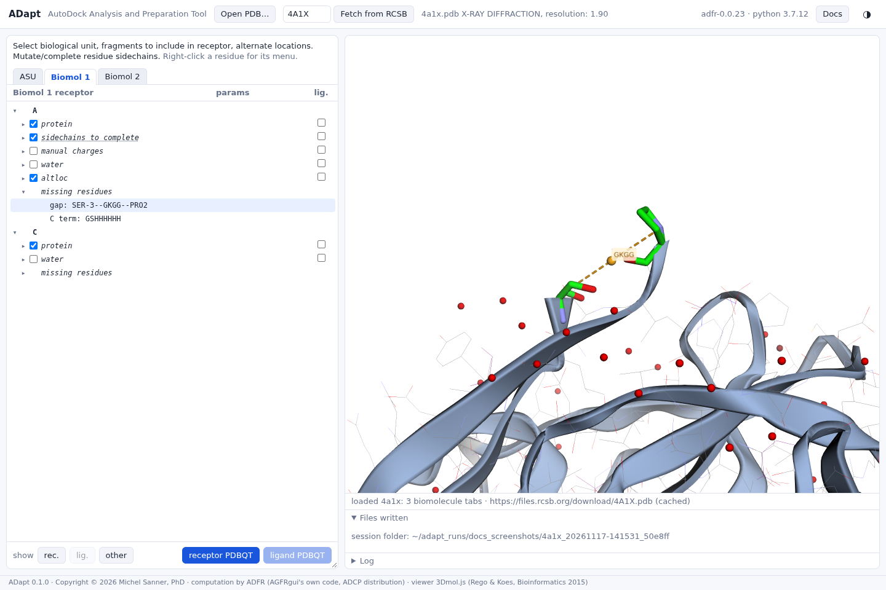
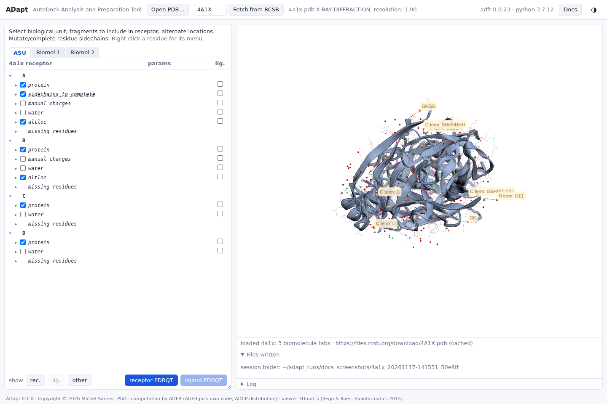
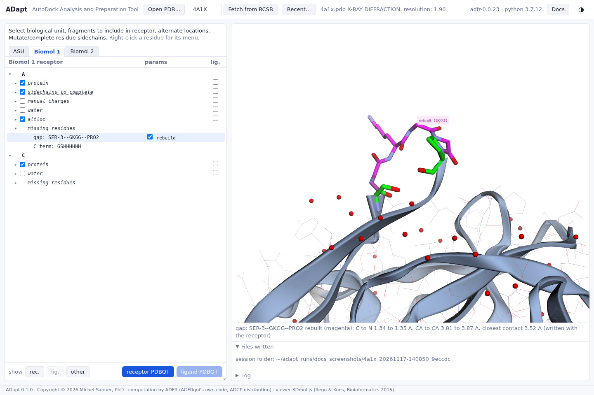
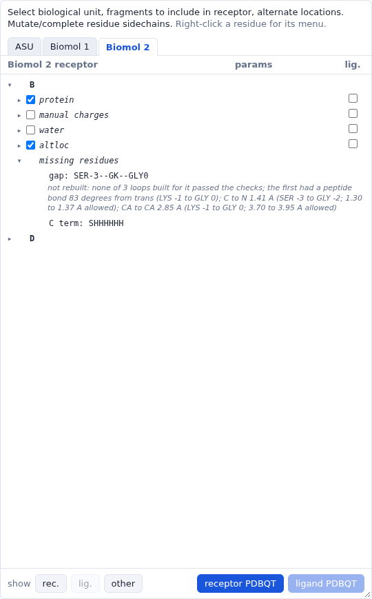

Missing residues
4A1X: see where the model has holes. Gaps in the chain and missing ends are listed in the tree and drawn in the 3D view, and a gap can be rebuilt if you choose to.
Residues without electron density are not in the model, and the file lists them (its
REMARK 465 records). ADapt compares each chain's sequence with the residues present
and lists what is missing under missing residues:
gap: SER-3--GKGG--PRO2: GKGG is missing between SER -3 and PRO 2;N term: GELandC term: GSHHHHHH: residues missing at the start or end of the chain (here the His tag).


By default missing residues are information only: nothing is rebuilt, and the PDBQT files are the same whether or not a chain has any. A gap near the pocket is a reason to prefer another assembly or entry, or to rebuild it (below) knowing what that gives you.
Rebuilding a gap
Each gap between two residues of a chain has a rebuild box in its params column. Nothing
is rebuilt until you tick one, and with no box ticked every file ADapt writes is exactly what it
would be without this feature. Ticking a box builds the gap's residues at once and draws them with
magenta carbons, labelled rebuilt: GKGG; the gap's orange marker is hidden
while they are drawn. What is drawn is what the receptor file will contain: the same coordinates.
Unticking removes them.

How the residues are made:
- Their names and numbers come from the file's
REMARK 465records. SEQRES gives one letter per residue, which cannot tell a phosphoserine (SEP) from a serine, and the numbers that follow the residue before a gap are not always the deposited ones (1A3R chain H jumps from CYS 128 to GLY 131). - PDBFixer places their heavy atoms on an arc between the two residues they join, with the residues near the gap around them, and relaxes them in its own soft force field. It is asked for the chosen gaps only: it adds no other atom, so side chains stay ADFR's rotamers and your choices.
- PDBFixer's soft force field leaves a sketch, not a model: on ADFR's test entries its loops had peptide bonds anywhere from cis to trans, consecutive CA atoms 1.4 to 4.1 Å apart, residues of the wrong hand (D) and threonines in their allo form. So each new side chain is first turned about its CA until CB sits where an L residue's would, an inverted Thr or Ile CB is righted, and the residues are then refined in Amber ff14SB (OpenMM): every observed atom held fixed, after a short stage in which a soft repulsion lets the loop untangle. Every new peptide bond is kept trans and every new CA L by restraints with flat wells, which exert no force on a loop inside them. Charges are off: the aim is sane covalent geometry without clashes, not a model of the loop's electrostatics.
- The loop is checked against the tolerances below. If it is outside them the build is made again with the next seed (1, then 2, then 3), and the first loop that passes is kept. If none does, nothing is written: the box goes back and the tree says why.
- When the receptor is written,
reduceadds the hydrogens of the new residues along with everyone else's, and they get Gasteiger charges and AutoDock types like the rest. They are written in chain order, between the residues they join.
| Check | Allowed | Why |
|---|---|---|
| C to N of every new peptide bond, the two joins included | 1.30 to 1.37 Å | A peptide bond is 1.33 Å. |
| CA to CA of consecutive residues, the residues either side included | 3.70 to 3.95 Å | Across a trans peptide it is 3.80 Å in crystal structures; minimised in ff14SB, an observed stretch of 4A1X (chain A, 20 to 25) measures 3.84 to 3.89 Å. |
| Every new peptide bond trans | within 30° of 180° | A cis bond (CA to CA about 2.9 Å) is reported as cis and refused. |
| Every new Thr and Ile: the hand of CB | as in the amino acid, not its allo form | PDBFixer's dynamics invert some; ADapt rights them before refining. |
| Every new CA: improper N-C-CA-CB | positive (L), and 97 to 147° | 122° for an L residue; the observed residues beside ADFR's test gaps measure 114 to 129°. Further off, the CA is distorted (squeezed toward the other hand). |
| Closest new heavy atom to an observed heavy atom more than three bonds away | 2.5 Å or more | Closer is a clash; hydrogen bonds are 2.6 Å and up. |
The measured values are in the status line when a box is ticked, and in
session.json with every save. On ADFR's test entries:
| Gap | C to N (Å) | CA to CA (Å) | Closest contact (Å) | Seed kept, time |
|---|---|---|---|---|
| 4A1X A: SER -3, GKGG, PRO 2 | 1.335 to 1.355 | 3.808 to 3.873 | 3.52 | 1, 5 s |
| 1A3R H: CYS 128, GDTTG (131 to 135), SER 136 | 1.339 to 1.348 | 3.835 to 3.879 | 3.25 | 1, 8 s |
| 6BHG A: ASP 270, GNQ, VAL 274 | 1.342 to 1.348 | 3.836 to 3.893 | 3.66 | 2, 12 s |
| 4A1X B: SER -3, GK, GLY 0 | not rebuilt: two residues cannot close it (below) | |||
Measured by ADapt's tests (tests/test_rebuild.py) on the files themselves. A
rebuilt stretch of 1H6W that is observed in the crystal (chain A, 385 to 387, taken out for the
test) comes back 2.2 Å from the deposited backbone (RMSD over N, CA, C, O).
When a gap cannot be rebuilt
The box is replaced by the reason, under the gap's entry:

A gap is not offered when:
REMARK 465does not list exactly its residues, or numbers one of them with a number the chain already uses (a water or a hetero group of the same chain, for example);- one of its residues is not one of the 20 amino acids. A selenomethionine (MSE) is the exception: it is built as the methionine ADFR writes for every MSE;
- a residue either side is not one of the 20 amino acids (after MSE becomes MET), lacks its N, CA or C, or the residue before ends with an OXT;
- its ends are further apart than its residues can span: CA to CA more than 3.8 Å per peptide bond (n + 1 bonds for n residues);
- the loop built for it fails the checks above, as 4A1X's GK does: this is found by building it, so the reason appears after you tick the box.
Missing ends are not offered. Only one end of a missing terminus is held, so where its residues go would be a guess.
In an assembly
A gap is chosen for a chain, in every tab that has the chain. In an assembly built by
symmetry each copy of the chain gets the gap rebuilt in its own place, among its own neighbours, as
ADFR completes side chains in every copy. The REMARK line is written once per gap,
and session.json records each copy. Copies are drawn translucent, as the rest of
them is.
The new residues are in the receptor when the residues on both sides of the gap are, and never in a ligand. A gap in a chain written as a ligand is not filled.
Reproducible
Everything random in a build is seeded (the seed kept is in the REMARK line) and runs
on OpenMM's Reference platform, so the
same input gives the same coordinates on any machine and in any session; ADapt's tests check
this. The surroundings a loop is built among include every location of every atom, so choosing
another alternate location does not move it. The side chains ADFR completes next to a loop are
built on the default alternate location, which is the same in every run (most atoms, then highest
occupancy, then first letter; see alternate locations).
A build takes a few seconds per gap (3 to 12 s on ADFR's test entries): PDBFixer's own relaxation, then the refinement, once per seed tried. The first build after ADapt starts also loads OpenMM and PDBFixer, which adds a few seconds.
AGFRgui never showed missing residues, because ADFR's detection had a defect, corrected in ADFR 0.0.23; see ADapt and AGFRgui. Rebuilding gaps is ADapt's own; AGFRgui and ADFR's command line have no equivalent.